Cartographie Sémantique pour Habiter Babel
Naviguer dans l'écart entre logique machine et sens humain
Présenté par Nicolas Figay

Liens vers présentations et ressources
Vous pouvez accéder à la présentation via la lien suivant: nfigay.github.io/training/AI4KMSemanticCartographyBabel.html .
ArchiCG: https://nfigay.github.io/ArchiCG/ .
Habiter Babel, un manifeste pour une ingénierie responsable du sens: https://nfigay.gumroad.com/l/habiterbabel .
News Letter The Semantic Compass: https://nfigay.substack.com/ .
Articles LinkedIn: 🌐 Ten Years of Writing on Interoperability, Semantics & Architecture: A Navigational Guide .
Rapport de thèse HDR: Continuous Operational Interoperability .
Rapport de thèse PhD: Interoperability of Technical Enterprise Applications .
Plan de la présentation
- Qui je suis
- Problème
- Eléphant
- Solutions
- Limites
- Triangle
- Rupture
- Cartographie Sémantique
- Démonstration ArchiCG
- Responsabilité
- Babel
- Conclusion
Qui je suis
Ingénieur, Expert et Chercheur
Thématique: Intéropérabilité opérationnelle continue
pour
- La gestion du cycle de vie du Produit (PLM)
- L'ingénierie Systèmes, basée sur les modèles
- L' architecture d'entreprise
Confronté à :
- multiples disciplines
- multiples modèles
- multiples visions du réel
Problème terrain
On a le sentiment que tout le monde se comprend lorsqu'il s'agit de:
- Collaborer
- Cooperer
- Coordonner
- Communiquer
mais tout le monde parle et ne se comprend pas tandis que le système d'information est fragmenté et
Allégorie : l’éléphant
Chaque acteur voit un petit bout de l'ensemble de ce qui est à addresser:
- Ingénieurs
- Responsables opérationnels
- Business
- Fournisseur de solution informatique ...

Chaque acteur voit une réalité différente
+ langage + modèle + ontologie + épistémologie
Facilitateurs expérimentés et freins adressés pour l'interopérabilité
De nombreux facilitateurs:
- Ontologie
- Architecture pilotée par les modèles
- Plateformes d'entreprises orientées services
- Architecture d'entreprise
- Normes et Standards
Des freins adressés:
- Préservation sémantique
- Collaboration Sécurisée
- Collaboration en réseau
Au travers de nombreux projets opérationnels, de recherche et de standardisation
Mais…
- Rythme de changement et de complexification grandissant
- Perte des frontières (virtualisation)
- Confusion data / information / connaissance
- Incompatibilités paradigmiques et structurelles
- Pas d’autorité sur le sens
Le vrai problème
- Confusion entre compréhension par l'humain et traitement par la machine
- Croyance non avérée que la communication entre domaines de connaissances est toujours possible
- Tendance à croire que les modèles sont la vérité
La notion de sens
Pour comprendre l'interopérabilité sémantique, il faut revenir le sens à
les
théories du sens et comprendre et l'importance du contexte pour
l'interprétation des informations, en revenant aux définitions de
- Sémiotique : L'étude des signes
- Sémantique
- Syntactique
- Pragma et le pragmatisme
- Dénotation et Connotation
- Rhétorique et Structuration du Sens
- Du concept au graphe de concepts
Tout en prenant en compte
- L'Extension au monde Informatique
- Les Communautés, Domaines et Concepts Multiples
- L'impact et l'application à l'Interopérabilité
Sans entrer dans le détail, voici les points les plus importants
Pour comprendre l'interopérabilité sémantique, il faut revenir le sens à les théories du sens et comprendre et l'importance du contexte pour l'interprétation des informations, en revenant aux définitions de
- Sémiotique : L'étude des signes
- Sémantique
- Syntactique
- Pragma et le pragmatisme
- Dénotation et Connotation
- Rhétorique et Structuration du Sens
- Du concept au graphe de concepts
Tout en prenant en compte
- L'Extension au monde Informatique
- Les Communautés, Domaines et Concepts Multiples
- L'impact et l'application à l'Interopérabilité
Sans entrer dans le détail, voici les points les plus importants
La sémantique
La sémantique désigne l'étude du sens et de la signification des mots, des phrases, des symboles ou des signes dans un contexte donné.
- Elle traite des significations des mots, phrases et symboles.
- Elle examine comment ces significations sont comprises par les utilisateurs dans différents contextes.
- Elle se divise en plusieurs sous-domaines : sémantique linguistique, sémantique logique, etc.
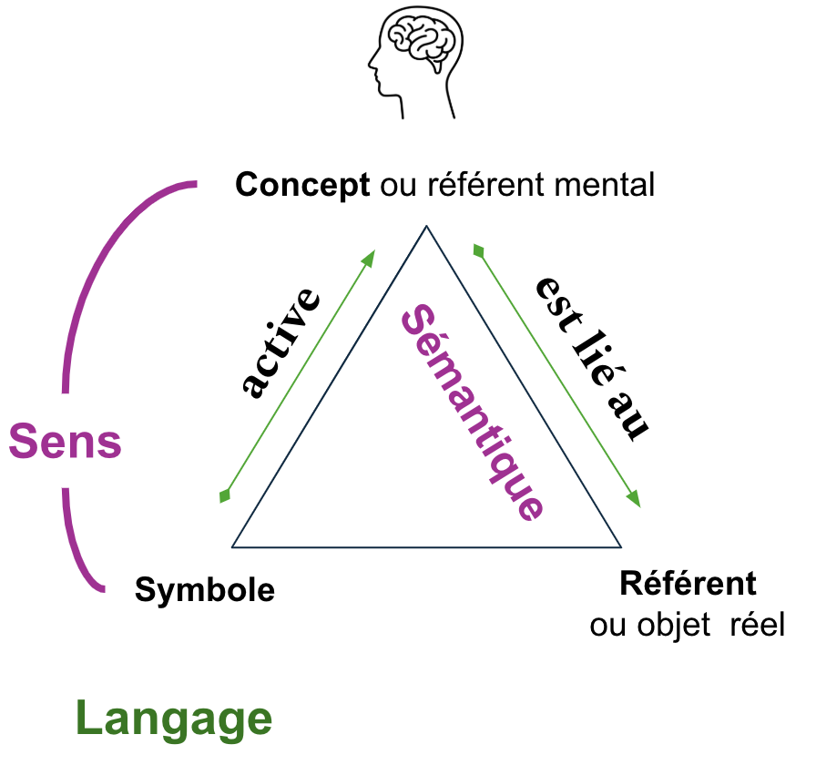
Du concept au graphe de concepts
Dans les exemples classiques du triangle sémantique, on parle souvent d'un concept et de son référent. Cependant, il est fondamental de considérer l'ensemble des relations dans un graphe conceptuel pour appréhender pleinement le sens.
- Un concept pris isolément n'a que peu de valeur ; c'est son interconnexion avec d'autres concepts qui lui donne du sens.
- Les graphes conceptuels offrent une modélisation essentielle du sens et de ses dépendances.
- Cette approche garantit une compréhension partagée et réduit les risques d'ambiguïté.
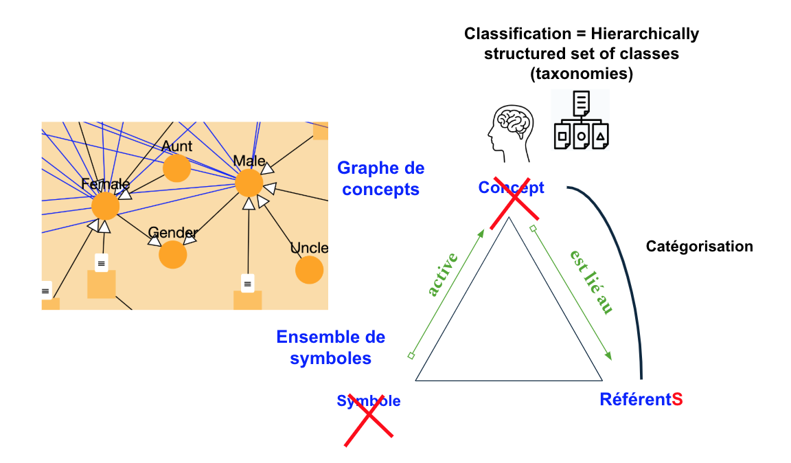
Extension au Monde Informatique
Lors du passage du monde de l'information et des connaissances vers le monde des ordinateurs, il faut considérer:
- Ressource Digitale <- Référent
- Code ASCII <- de forme symbolique(terme)
- Représentation formelle et digitale <- de graphe de concepts
Pour la forme, on a des représentations duales
- pour la communication des humains d’une part,
- pour le traitement des machines d’autre part

Communautés, Domaines et concepts multiples
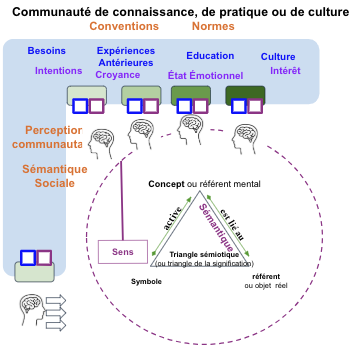
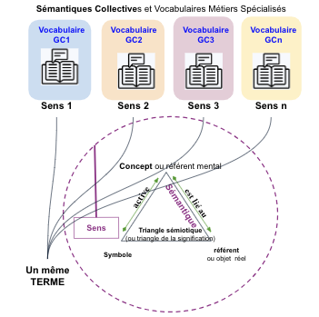
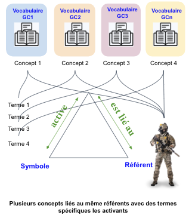
- De nombreux graphes sémantiques
- Des domaines à interrelier pour communiquer et collaborer
- Mais non intégrables ni unifiable - un vieux fantasme
- Les graphes sémantiques et les ontologies ne sont pas les seuls moyens de formaliser la connaissance et amènent limitations et contraintes les rendant parfois inappropriés
Rupture
Passer de :
modèles → vérités
à :
cartographie des points de vue
Ingénierie responsable du sens
- Le sens implique des acteurs
- → autorité
- → responsabilité
- → traçabilité
Cartographie sémantique
→ cartographier les différences et rendre explicites les divergences
- domaines d'activité
- acteurs avec leur statut (responsable, comptable)
- modèles avec leur statut (applicabilité, effectivité)
- médiations quand besoin de collaborer et de communiquer sur des mêmes référents
De la sémantique des données à celle des structures visuelles
De l'ère de Gutemberg à celle du numérique
| De | Vers |
|---|---|
| Dessin Papier | Modèles interrogeables, vivants et dynamiques |
| Vues statiques | Navigation avec dynamique centrée utilisateur |
| Mise en forme manuelle | Mise en forme automatique (auto-layouting) |
| Sens du visuel non explicité | Eléments visuels et leur structure sémantisée |
| Diagrammes isolés | Base de connaissance visuellement interrogeable et navigable |
| Modèles descriptifs | Système d'aide à la décision |
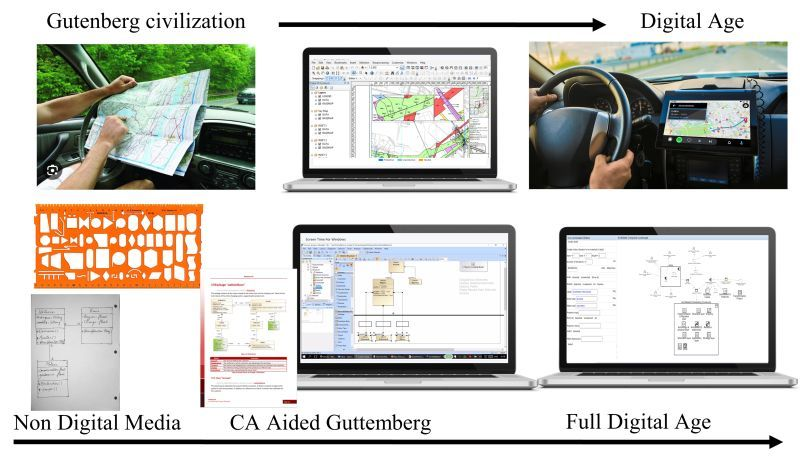
La Cartographie sémantique est à la connaissance
ce que le GPS est à la géographie
Cartographie sémantique: Modèle de définition et méthode
| Modèle de définition | Méthode (Tâches) |
|---|---|
| Métamodèle conceptuel du domaine: relations et types abstraits | T1 – Définir les valeurs textuelles pour les types |
| Termes et structures textuelles (Syntaxe concrète 1) | T2 – Définir les symboles visuels pour les types |
| représentation et symboles visuels (Syntaxe concrète 2) | T3 – Définir le mise en correspondance au moyen du moteur de rendu de cytoscape via des selecteurs et des types. La notation (symbole) doit exister. Sinon, T50. |
| Mise en correspondance: aligne les syntaxes textuelle & visuelle aux types/classes conceptuelles | T50 – Dénition de la notation(symboles) visuelle quand elle n'existe pas ou n'est pas complète(ex: OWL) |
| Sélecteurs: définie les éléments ciblés par un rendu visuer (ex: node[type='X']) | |
| Styles: rend le symbole visuel (forme, couleur, icônes...) | Moteur de rendu Cytoscape: Composant de réalisation pour l'exécution de la mise en correspondance |
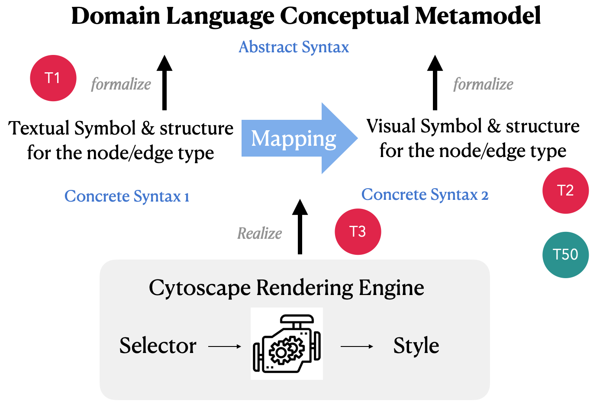
=> modèle de définition et méthode pour la sémantisation de graphes composites pour tel ou tel langage
ArchiCG
Prototype expérimental de sémantisation de graphe composites et de ses usages
- Avec ArchiMate pour commencer (réprésentation de l'enterprise comme environnement où se déroule les opérations
- Avec d'autres langages comme OWL, STEP ou UAF dans les versions à venir
Application à plusieurs langages successivement pour valider et améliorer la méthode
Il sera possible dans le futur d'implémeenter des hypermodèles polyglottes.
ArchiCG prototype & use cases
Architectural Principles for openess & interoperability
Aggregator for siloed
enterprise data distributed in heterogenesous enterprise
repositories:
| Principle | Description |
|---|---|
| Web-native Architecture | Runs entirely in the browser — no server required, enabling simple deployment and access anywhere |
| Open Technologies | Built on vanilla JavaScript and SVG, using open formats (JSON, RDF, SVG) to maximize compatibility |
| Modular Design | Activatable components and palettes allow integration of multiple modeling languages (ArchiMate, OWL,ISO STEP P21, etc.) |
| Silo Independence | Usable offline or across networks, without relying on centralized platforms or locked ecosystems |
| Local Data only and no referential | For security constraints and for preventing one more database to maintain |
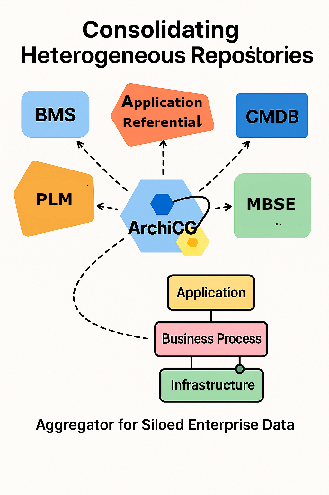
General Business Case: Building Interoperability with open standard
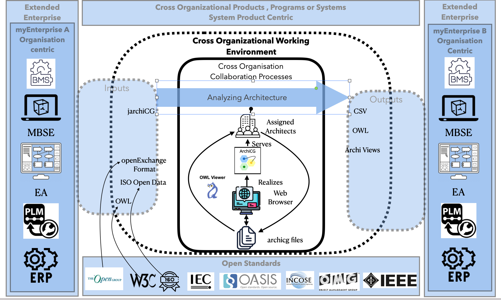
All the import and export are based on Open De Facto Standards with semantization aligned with comprehensible structure.
Specific Use Cases
| Test Case | Domain | Standard / Language | Purpose |
|---|---|---|---|
| Enterprise Landscape | Enterprise Architecture | ArchiMate and associated Open Exchange Format | Demonstrate semantic structuring of enterprise models using a standardized EA Visual Architectural Description Language, for which an open notation specification exists. |
| Knowledge Landscape | Ontologies and Knowledge Graphs | Ontology Web Language and associated Serialization Syntaxes | Visualize and explore ontological structures with semantic clarity. No standardized notation exists for OWL, so a current effort was initiated to propose one having in mind semantization of compound graphs. Cf. Exploring OWL Ontologies Visually: A Paradigm Shift in Understanding |
| Product Data Landscape | Product Lifecycle and Engineering Data | ISO STEP (AP242) and associated Syntaxe and Schema Definition language | Navigate complex product definitions and contexts using semantic links |
| Digital Business Ecosystem | Distributed Business Processes | Blockchain (no formal language) | Show feasibility of semantic cartography even without a modeling standard |
All test cases aim to demonstrate the applicability and value of semantized compound graphs across diverse domains and standards.
Enterprise Landscape with ArchiMate
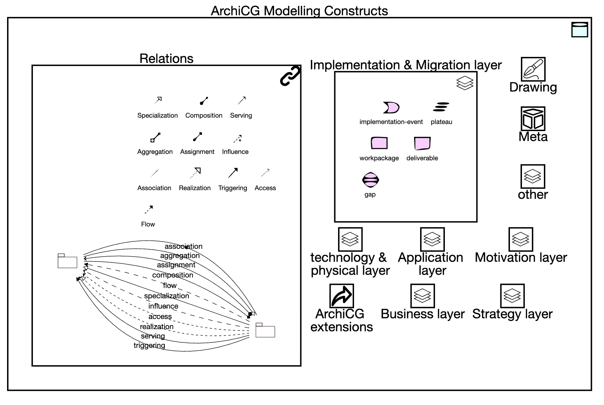
Knowledge landscape with OWL visualisation
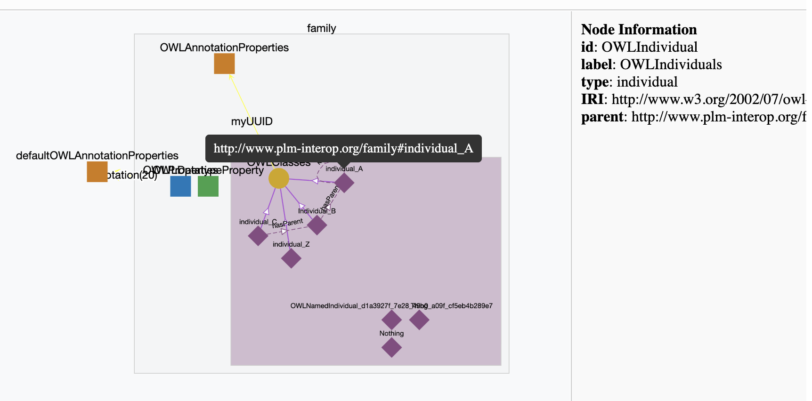
4.3.3 Product Landscape with ISO STEP
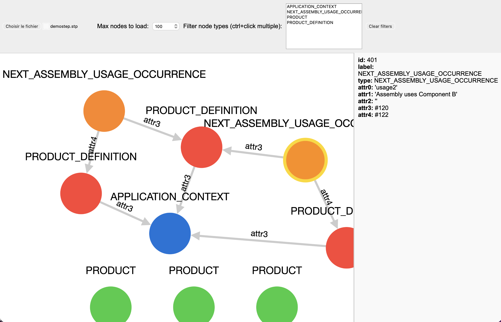
Habiter Babel
Pas supprimer la diversité
Mais la rendre navigable
→ Cartographier plutôt que normaliser

Conclusion
Le problème n’est pas technique
Il est socio-sémantique
ArchiCG = outil pour habiter Babel